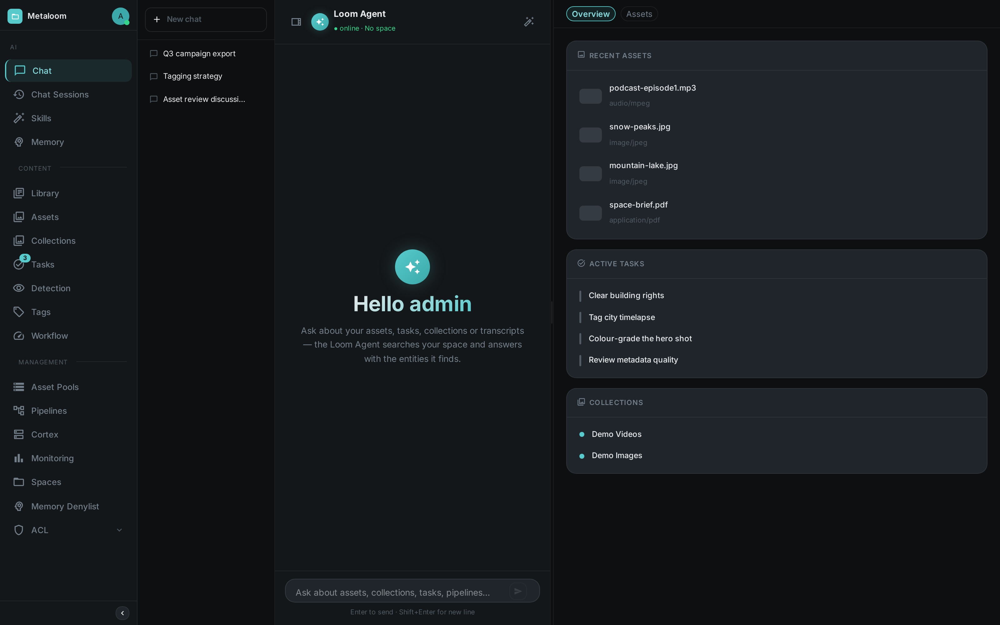
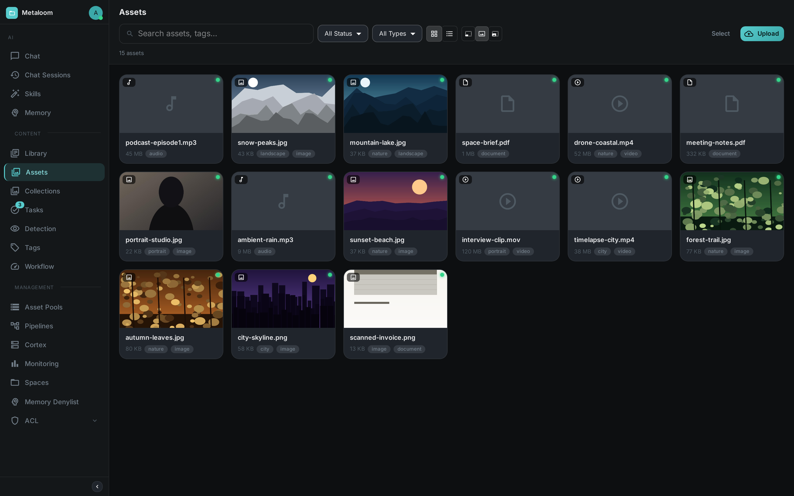

This guide gets a full MetaLoom stack running locally in a few minutes using the demo container. No build tools or configuration files are required.
What You Will Run
The demo image (metaloom/loom-demo) bundles everything in one container:
-
Loom UI — the browser interface you will spend your time in: chat, assets, pipelines and administration, served at
/ui/by the server itself. This is the front door. -
Loom — the asset management server behind it (REST API, WebSocket and the UI, all on port 8092)
-
Loom App — an optional desktop client built with Electron, wrapping the same UI
For the full set of images and their ports, see Container Images.
Prerequisites
-
Docker and Docker Compose installed
-
A terminal
Start the Demo Stack
The metaloom/loom-demo image bundles Loom together with a pre-seeded PostgreSQL database and a set of sample assets so you can explore the system without any manual setup.
docker run -d \
--name loom-demo \
-p 8092:8092 \
metaloom/loom-demo:latestOpen the Loom UI
http://localhost:8092/ui/
Log in with admin / finger. The demo database is pre-seeded, so every screen has real content from the first click.
The UI is the front door to everything the server can do — you do not need the REST API to get started. You land on the AI assistant; the asset browser, pipeline editor, tags, face detection and the admin area are one click away in the navigation.

Browse, search and preview the seeded media in the asset area:

Key areas of the UI:
| Section | Purpose |
|---|---|
Chat & AI Agent |
Ask questions about your assets in natural language (the landing page) |
Assets |
Browse, search, upload and preview media assets |
Pipelines |
Author pipelines in the editor and watch runs execute live |
Users & Groups |
Create and manage user accounts, group memberships and role assignments |
API Keys |
Generate and revoke long-lived API tokens (see Authentication) |
Settings |
Server configuration and system status |
For a screenshot tour of every area, see Loom UI.
Credentials
| Field | Value |
|---|---|
Username |
|
Password |
|
(The password is set by LOOM_INITIAL_PASSWORD, which the demo image defaults to finger.)
The server itself — REST API, WebSocket and SSE — is on http://localhost:8092 for when you want to
integrate rather than click.
Loom App
Loom App is a desktop application built with Electron. It embeds the Loom UI inside a native window and adds OS-level integrations:
-
System tray icon with quick access to the connected server
-
Native file drag-and-drop for asset ingestion
-
Local connection profiles for managing multiple Loom servers
Download the latest release from the Loom App releases page or build from source.
To connect Loom App to the demo instance, launch the app and point it at http://localhost:8092.
Next Steps
Once the stack is running and you can log in:
-
Explore the REST API — REST API Reference
-
Understand the authentication model — Authentication
-
Read how Cortex processes assets — Operation
-
Deploy to production — Loom Artifacts, Helm Chart